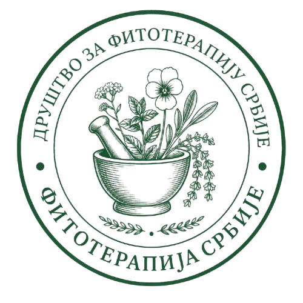

У времену убрзаног живота, отуђености од природе и све веће употребе хемијских лекова, оснивање удружења за фитотерапију представља важан корак ка очувању здравља, традиције и природних ресурса Србије.
Спој науке, традиције, митологије и духовности биља, као и енергетске мапе Србије.
Придружи нам сеЦиљ удружења је да промовише, едукује и подстакне употребу лековитог биља у свакодневном животу, као и да очува богату традицију народне медицине и знања које се вековима преносило усменим путем – од травара, бака, монаха и чувара биљне мудрости.
Србија, као земља изузетне биоразноликости, поседује преко 700 регистрованих врста лековитих биљака, од којих многе расту само на специфичним локалитетима – Тара, Стара планина, Радан, Пештер, Ртањ, Копаоник, Фрушка гора… То је наше зелено благо, које захтева очување, одговорну бербу, едукацију и примену у савременом контексту.
Фитотерапија није само знање – то је начин живота. То је враћање себи, корену и земљи.
Удружење ће радити за оне који верују у снагу биљака, за оне који траже баланс између тела и духа, и за будуће генерације које заслужују да природу упознају – не само кроз слике, већ кроз додир, мирис и деловање.
Очување свести о фитотерапији (лечењу биљем) важно је из више разлога — здравствених, културних, еколошких и духовних.
У времену када савремени човек тражи начине да се врати себи, природи и свом телу — фитотерапија нуди тихи, али моћни пут исцељења. Оснивањем удружења за фитотерапију, желимо да:
Биљке у српским митовима и народним предањима.
Биљке у словенској духовности. Астролошке и архетипске повезаности.
Мапа Србије са енергетски важним локалитетима.
+ интерактивна мапа са подацима о лековитом биљу по регијама
Постани део покрета
Ако верујеш у моћ биља, у вредност знања предака и у лепоту једноставног, здравог живота — придружи нам се.
Буди део удружења које чува, подучава и штити.
Придружи нам се